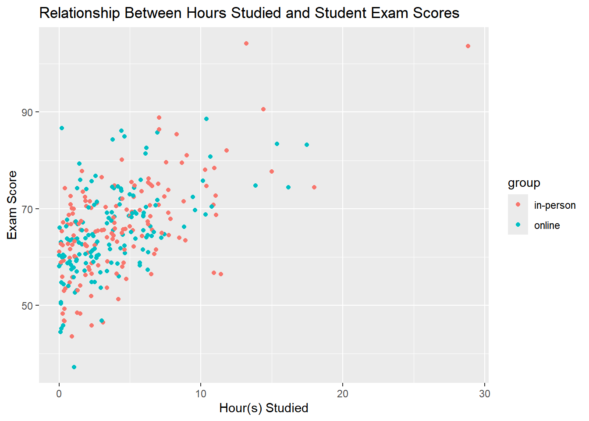

# Set seed for reproducibility
set.seed(123)ME314_midterm_240006078
LSE ME314: Introduction to Data Science and Machine Learning
Submission Instructions
This assignment is due Wednesday 23rd of July 2025 at 9am:
Please submit this assignment via the submission portal on Moodle.
Please submit your assignment as both a knitted .html file and the corresponding .qmd file; PDFs or other formats will not be accepted. You must name the files accordingly: “ME314_midterm_XXXXXXXXX” where XXXXXXXXX should be replaced with your LSE candidate number. The candidate number is your LSE ID number (not your Library number).
We will assess your assignment based on how well you apply the methods and reasoning introduced during our lectures and seminar sessions.
Please note, we will not contact you to recompile documents if they are submitted in the wrong format. It is your responsibility to ensure you submit your work correctly. Failure to do so will result in a mark of 0 for that assignment.
You are expected to complete this problem set yourself without excessive use of generative AI. You should use sample code from seminars and lectures, and adapt it to the questions below on your own. You may consult generative AI to answer general questions and/or supplement your learning, but not to complete the exercises. Markers have lots of experience reviewing student work, and they can usually tell when generative AI substantially completed an assignment. If we suspect you have done this, we will mark your answers accordingly.
Introduction
This is a summative assignment, and will constitute 25% of your final grade. You should use feedback from seminars to ensure you meet both the substantive and formatting standards for this module.
For clarity, the formatting requirements for this assignment are:
Unless otherwise stated, you must present all results in full sentences, as you would in a report or academic piece of writing. Keep it as concise as possible!
If the exercise requires generating a table or figure, you should include at least one sentence introducing and explaining it. E.g. “The table below reports the counts of Wikipedia articles mentioning the LSE, by type of article.”
Unless stated otherwise, all code used to answer the exercises should be included in the code chunks for each exercise.
All code should be annotated with comments, to help the marker understand what you have done.
Your output should be replicable and results should be reproducible. Any result/table/figure that cannot be traced back to your code will not be marked.
Question 1: Data and Programming (10 Marks)
This question is designed to test your ability to (1) load and clean data, (2) summarise and transform data, (3) perform simple for-loop operations with programming, and, (4) devise control flows.
1.1 Loading and cleaning data:
Set the random seed to 123. The code is included. This is for reproducibility and must be executed for consistent reproduction of the same outputs.
After this, load the
airqualitydataset, which is built-in with R. Inspect the structure of the dataframe withstr().Next, drop all rows in which any column contains an NA value.
After this, remove all rows where the value of
Ozoneis more than 2 standard deviations above the meanOzonelevel in our dataset. Name this new dataframeaq_clean.Finally, use the
dim()function to print the dimensions of theaq_cleandataframe. How many rows are remaining?
# load the airquality dataset into my own object then observed its structure
data("airquality")
aq <- airquality
str(aq)'data.frame': 153 obs. of 6 variables:
$ Ozone : int 41 36 12 18 NA 28 23 19 8 NA ...
$ Solar.R: int 190 118 149 313 NA NA 299 99 19 194 ...
$ Wind : num 7.4 8 12.6 11.5 14.3 14.9 8.6 13.8 20.1 8.6 ...
$ Temp : int 67 72 74 62 56 66 65 59 61 69 ...
$ Month : int 5 5 5 5 5 5 5 5 5 5 ...
$ Day : int 1 2 3 4 5 6 7 8 9 10 ...# delete rows with NA then observing its dimension to see how many rows were deleted
aq = na.omit(aq)
dim(aq)[1] 111 6# loading dplyr in order to filter and clean the dataset some more
library(dplyr)
Attaching package: 'dplyr'The following objects are masked from 'package:stats':
filter, lagThe following objects are masked from 'package:base':
intersect, setdiff, setequal, union# filtering the dataset to remove all rows were the value of Ozone is more than 2sd above the mean
# finding the mean and sd of Ozone then the max value we want Ozone to be
oz_mean = mean(aq[["Ozone"]])
oz_sd = sd(aq[["Ozone"]])
oz_max = oz_mean + 2*oz_sd
# filtering the dataframe to only include up to the max value (2sd above the mean) and loading it into aq_clean
aq_clean = aq %>%
filter(Ozone <= oz_max)
# finding the dimensions of aq_clean
dim(aq_clean) [1] 105 6
Answer
Answer: There are 105 rows left in the dataframe.
1.2 Summarising and transforming data:
Take your aq_clean dataframe and follow these steps in order:
Add a new column titled
Temp_Celswhich contains the temperature in Celsius using themutate()function from thedplyrpackage in thetidyverse.The data is currently in Fahrenheit.Use
group_by()andsummarise()to calculate the averageWindandTemp_Celsper month.Which month has the highest average Wind? What is this value?
Which month has the median average Temp_Cels? What is this value?
# loaded the tidyverse library
library(tidyverse)── Attaching core tidyverse packages ──────────────────────── tidyverse 2.0.0 ──
✔ forcats 1.0.0 ✔ readr 2.1.5
✔ ggplot2 3.5.2 ✔ stringr 1.5.1
✔ lubridate 1.9.4 ✔ tibble 3.2.1
✔ purrr 1.0.4 ✔ tidyr 1.3.1
── Conflicts ────────────────────────────────────────── tidyverse_conflicts() ──
✖ dplyr::filter() masks stats::filter()
✖ dplyr::lag() masks stats::lag()
ℹ Use the conflicted package (<http://conflicted.r-lib.org/>) to force all conflicts to become errors# adding a new column with the temperature in Celcius
aq_clean = aq_clean %>%
mutate("Temp_Cels" = (Temp - 32) * (5/9))
# Getting the average wind and temperature in Celcius by month
aq_sum = aq_clean %>%
group_by(Month) %>%
summarise(mean(Wind), mean(Temp_Cels))
# filtering to get the row with the max mean wind
aq_sum %>%
filter(aq_sum[["mean(Wind)"]] == max(aq_sum[["mean(Wind)"]]))# A tibble: 1 × 3
Month `mean(Wind)` `mean(Temp_Cels)`
<int> <dbl> <dbl>
1 6 12.2 25.7# filtering to get the row with the median mean temperature in celcius
aq_sum %>%
filter(aq_sum[["mean(Temp_Cels)"]] == median(aq_sum[["mean(Temp_Cels)"]]))# A tibble: 1 × 3
Month `mean(Wind)` `mean(Temp_Cels)`
<int> <dbl> <dbl>
1 6 12.2 25.7
Answer
Answer: Month 6 has the highest average wind with 12.2mph. Month 6 also has the median average temperature value at 25.7 degrees Celcius.
1.3 For-loop operations:
You have cleaned air‑quality data in a data frame aq_clean, and want to quantify the variability of the sample mean of Solar.R. In this subquestion, we will use a for-loop to get a bootstrapped standard error for the mean of the variable Solar.R.
Use the
mean()function to calculate the sample mean ofaq_clean$Solar.R.Assign
1000to a numeric vector of length 1 namedn_boot.Pre‑allocate an empty numeric vector
boot_meansof lengthn_bootusing thenumeric()function.In a for‑loop over i in 1:
n_boot:Draw a bootstrap sample of size
length(aq_clean$Solar.R)using the functionsample()with replacement fromaq_clean$Solar.RCompute its mean and store it in
boot_means[i]
Finally, use
boot_meansand thesd()function to estimate the boostrapped standard error for the mean of the variableSolar.R.Report both the sample mean (calculated in step 1) and its bootstrapped standard error.
# find the sample mean of Solar.R
sr_mean = mean(aq_clean$Solar.R)
# Number of bootstrap replicates
n_boot <- 1000
# Pre-allocate storage
boot_means <- numeric(n_boot)
# Loop to generate bootstrap means
for (i in 1:n_boot) {
#sampling from the Solar.R data
sample = sample(aq_clean$Solar.R, length(aq_clean$Solar.R), replace = TRUE)
#storing the mean of the sample each time
boot_means[i] = mean(sample)
}
# find the sd of the bootstraped means
sr_sd = sd(boot_means)
# Print the results
cat("Mean of Solar.R :", sr_mean, "\n")Mean of Solar.R : 181.8667 cat("Bootstrap std. error :", sr_sd , "\n")Bootstrap std. error : 8.774674
Answer
Answer: The sample mean is 181.8667 lang and the standard error is 8.774674 lang.
1.4 Control flow:
Use an if/else control flow to label days by whether they exceed the mean Ozone level.
Recalculate the mean
Ozoneusing the currentaq_cleandataframe.Create a new categorical variable in
aq_cleantitledOzone_Statuswith the label “High” if the row’s Ozone exceeds the mean, and “Low” if not. You must useifelse()for this.Calculate how many “High” days there are and report this number.
# recalculating the mean of the Ozone
oz_mean = mean(aq_clean$Ozone)
oz_mean[1] 37.19048#creating a new categorical variable
aq_clean = aq_clean %>%
mutate("Ozone_Status" = ifelse((aq_clean[["Ozone"]] > oz_mean), "High", "Low"))
# The table below counts how many values are in each status (high or low).
table(aq_clean$Ozone_Status)
High Low
40 65
Answer
Answer: There are 40 “High” days.
Question 2: Data Generating Processes (10 Marks)
Imagine you want to examine how study habits affect exam scores among 300 students. However, the distribution of study time is skewed: most students study little, but a few study a lot. The exam scores are generated using the following model: \[ \text{exam\_score} = 60 + 1.5 \times \text{study\_hours} + \epsilon \]
where \(\epsilon \sim \mathcal{N}(0,8)\) represents random noise.
2.1 Simulate the data:
Generate a vector called
study_hoursfor 300 students using an exponential distribution, scaled so that most students study between 0 and 20 hours.Generate a vector called
groupwith two unique values: “online” and “in-person” (150 students each), randomly assigned.Generate
exam_scoreusing the data generating process defined above, adding random noise \(\epsilon\) drawn from a normal distribution with mean 0 and standard deviation 8.Create a data frame called
exam_datawith the three variables.
# set seed for reproducibility
set.seed(123)
# setting the number of students
n_students =300I chose a rate of 1/4 since then the expected study time would be around 4 hours (expectation of an exponential is 1/lambda) and the majority of students would be skewed towards the lower end of studying. I made sure the majority of students studied between 0 and 20 hours through looking at the histogram and summary statistics. 75% of the students study 6 hours or less. The maximum anyone studied is 28 hours. This makes sense as a max as that student’s score would be around 100 (actually, 102) according to the formula we specfied. 100 is the max score you can get on an exam but the randomized error simulated seems to account for the overestimate. Similarly, the randomize error epsilon accounts for the scores below 60.
# generating study hours through exponential distribution then creating a histogram and reading the summary
study_hours = rexp(n_students, rate = 1/4)
hist(study_hours, main = "Distribution of Study Hours", xlab = "Hours Studied")summary(study_hours) Min. 1st Qu. Median Mean 3rd Qu. Max.
0.01747 1.27188 3.36918 4.06096 5.91868 28.84403 # generating the options the group can sample from
status = c("online", "in-person")
# drawing randomly the status of students online or in person by sampling to create group with 150 each
group = sample(rep(status, each = 150))
# generating exam scores using the given formula and simulating the normally distribute errors
epsilon = rnorm(n_students, mean = 0, sd =8)
exam_score = 60 + (1.5*study_hours) + epsilon
# creating the dataframe with the three variables then checking the creating by head
exam_data = data.frame(study_hours = study_hours,
group = group,
exam_score = exam_score)
head(exam_data) study_hours group exam_score
1 3.3738290 in-person 64.04737
2 2.3064411 online 54.81631
3 5.3162195 online 69.37398
4 0.1263094 online 50.66150
5 0.2248439 online 59.90330
6 1.2660049 in-person 48.421682.2 Visualize the data using ggplot2:
Create a scatter plot of
exam_scoreversusstudy_hours, with points colored bygroup.Make sure to use good design choices, such as adequate labels for the axes and an informative title.
# loading ggplot2 to plot
library(ggplot2)The plot below displays the relationship between how many hours a student studied and their exam scores for 300 students, colored by which group the student is in (Online or In-Person).
#generating the plot
plot = ggplot(data=exam_data) +
geom_point(aes(x = study_hours, y = exam_score,
color = group)) +
labs(
title = "Relationship Between Hours Studied and Student Exam Scores",
x = "Hour(s) Studied",
y = "Exam Score")
plot
2.3 Describe the plot you generated:
Describe the plot. Based on the model we used to create exam_score, why is it not surprising that there is no visible difference in exam scores between students attending lectures in person and those watching online?
Answer
Answer: The plot shows a generally linear trend between the hours a student studied and the exam scores they obtained for a sample of 300 students. This makes sense as we simulated the exam scores to fit along the formula \(\text{exam\_score} = 60 + 1.5 \times \text{study\_hours} + \epsilon\), which is a linear equation. The y-intercept seems to be around 60 and the slope seems to be around 1.5, as expected. This means that for every hour more a student studied, 1.5 points more were obtained on their exam. However, even if you studied 0 hours, you would still score around a 60. It was not surprising that there is no visible difference in exam scores between students attending lecture online and in-person as it was a controlled factor that was randomly sampled in our data. Within our formula for exam score, we give no consideration for group type. In the plot you can see that no matter the color, the data points are distributed similarly.
Question 3: Linear Regression (10 Marks)
For question 3, you will be working with a dataset about dogs in an animal shelter, waiting to be adopted. The dataset contains some information about dogs’ medical history and appearance and a variable adoption_speed that indicates how quickly the dog was adopted after being put up for adoption. The higher the value of adoption_speed, the quicker the dog was adopted.
The variables in the dataset are:
| Variable | Description |
|---|---|
| id | Unique identifier for each dog |
| age | Age of the dog in years |
| vaccinated | Whether the dog is vaccinated (1 = Yes, 0 = No) |
| dewormed | Whether the dog is dewormed (1 = Yes, 0 = No) |
| fur_length | Length of the dog’s fur in centimeters |
| weight | Weight of the dog in kilograms |
| adoption_speed | Speed of adoption (higher values indicate faster adoption) |
Assume we know the data generating process (DGP) and the only causal relationships between the variables are the ones listed below. Unless otherwise noted all of these effects are linear and additive.
Vaccination affects adoption speed.
Deworming affects adoption speed.
Age affects adoption speed.
Age affects vaccination status.
Age affects weight.
Dogs’ fur length has a non-linear (quadratic) effect on adoption speed.
3.1 Estimate a linear regression model
Read in the dataset dog_data.csv and inspect it. Translate the DGP into a linear regression model. Read through the description of the DGP carefully and include all variables in the formula that are necessary, making sure they are specified correctly. Estimate the model using the lm() function, naming the lm object dog_lm.
# load the dataset
dog_data = read.csv("C:\\Users\\zhaom\\Documents\\GitHub\\ME314\\midterm\\dog_data.csv", header=TRUE)
# inspection for first 6 rows and the structure of the dataframe and a summary of the variables
head(dog_data) id age vaccinated dewormed fur_length weight adoption_speed
1 1 15 0 1 31.63667 20.80232 58.60521
2 2 15 0 0 58.11123 25.78050 35.66223
3 3 3 0 0 66.28583 19.88588 48.79598
4 4 14 1 0 48.30661 23.01631 52.92591
5 5 3 0 0 58.58525 20.65876 50.09161
6 6 10 1 1 45.58403 24.99870 62.32790str(dog_data)'data.frame': 1000 obs. of 7 variables:
$ id : int 1 2 3 4 5 6 7 8 9 10 ...
$ age : int 15 15 3 14 3 10 2 6 11 5 ...
$ vaccinated : int 0 0 0 1 0 1 0 0 1 1 ...
$ dewormed : int 1 0 0 0 0 1 1 0 1 1 ...
$ fur_length : num 31.6 58.1 66.3 48.3 58.6 ...
$ weight : num 20.8 25.8 19.9 23 20.7 ...
$ adoption_speed: num 58.6 35.7 48.8 52.9 50.1 ...summary(dog_data) id age vaccinated dewormed
Min. : 1.0 Min. : 1.00 Min. :0.00 Min. :0.000
1st Qu.: 250.8 1st Qu.: 5.00 1st Qu.:0.00 1st Qu.:0.000
Median : 500.5 Median : 8.00 Median :0.00 Median :0.000
Mean : 500.5 Mean : 8.08 Mean :0.26 Mean :0.493
3rd Qu.: 750.2 3rd Qu.:12.00 3rd Qu.:1.00 3rd Qu.:1.000
Max. :1000.0 Max. :15.00 Max. :1.00 Max. :1.000
fur_length weight adoption_speed
Min. :11.75 Min. :13.00 Min. :21.02
1st Qu.:42.98 1st Qu.:19.77 1st Qu.:48.69
Median :50.20 Median :21.55 Median :54.06
Mean :49.80 Mean :21.62 Mean :54.01
3rd Qu.:56.39 3rd Qu.:23.59 3rd Qu.:60.10
Max. :88.52 Max. :31.34 Max. :78.13 # running a linear regression specifying the formula as a linear function of vaccination status, deworming status, age, and a quadratic function of fur length on adoption speed as for the DGP specified.
dog_lm = lm(formula = adoption_speed~ vaccinated + dewormed + age + fur_length + I(fur_length^2), data = dog_data) %>% summary()
dog_lm
Call:
lm(formula = adoption_speed ~ vaccinated + dewormed + age + fur_length +
I(fur_length^2), data = dog_data)
Residuals:
Min 1Q Median 3Q Max
-11.1944 -2.0111 -0.0404 2.0191 8.8926
Coefficients:
Estimate Std. Error t value Pr(>|t|)
(Intercept) 82.9017178 1.5257756 54.334 < 2e-16 ***
vaccinated 4.8300087 0.2256282 21.407 < 2e-16 ***
dewormed 1.2953737 0.1874433 6.911 8.6e-12 ***
age -0.8946105 0.0236688 -37.797 < 2e-16 ***
fur_length -0.2277529 0.0619795 -3.675 0.000251 ***
I(fur_length^2) -0.0047264 0.0006201 -7.622 5.8e-14 ***
---
Signif. codes: 0 '***' 0.001 '**' 0.01 '*' 0.05 '.' 0.1 ' ' 1
Residual standard error: 2.961 on 994 degrees of freedom
Multiple R-squared: 0.8778, Adjusted R-squared: 0.8772
F-statistic: 1429 on 5 and 994 DF, p-value: < 2.2e-163.2 Interpret the Regression Output
Interpret the coefficient on age, both in terms of magnitude and statistical significance.
Answer
Answer: The -0.8946105 coefficient on age means that there is a negative relationship between age and adoption speed (with the other counfounders of: vaccination status, deworming status, and fur length controlled). For every year the dog ages, its speed of adoption goes down 0.894 units in value. The p-value of <2e-16 indicates this finding is very signifigant to the model and the null hypothesis of age not affecting adoption speed should not be accepted. There is a very high probability that age affects adoption speed.
Question 4: Causal Inference (10 Marks)
For question 4 you will continue working with the dogs dataset from the previous question, but now you will estimate the causal effect of vaccination on adoption speed.
4.1 Causal Graph
Create a DAG-like graph to illustrate the causal relationships in the data. Use the ggdag package to create a DAG that includes all variables in the DGP. You don’t need to interpret the output. Tip: use abbreviated variable names (2-4 letters) to make the graph readable.
# loading neccesary packages
library(ggdag)
Attaching package: 'ggdag'The following object is masked from 'package:stats':
filter# creating my dag and seeting the coordinates
# key for the dag:
# AG = age
# VS = vaccination status
# DW - deworming status
# FL = fur length
# WT = weight
# AS = adoption speed
DAG = dagify(AS ~ VS + DW + AG + FL,
VS~AG,
WT~AG,
coords = list(x= c(WT = 2, AG = 2, VS = 2, DW = 4, AS = 4, FL = 6),
y =c(WT = 6, AG = 4, VS = 2, DW = 4, AS = 2, FL = 2)))
# ploting the DAG
DAGp = ggdag(DAG) +
theme_minimal()+
remove_axes()
DAGp4.2 Balance Table
Create a balance table for the predictor variables in your model and interpret the results. You should also draw on your knowledge about the DGP when interpreting the balance table. (Tip: if you use modelsummary::datasummary_balance() and get an error when compiling the quarto document with the balance table, specifying the option output = "markdown" may fix the error.)
# loading the library
library(modelsummary)
# creating a dataframe without adoption speed as that is our variable of interest an without id as it doesn't affect anything, its just an identifier
dog_data2 = dog_data %>%
select(-c(adoption_speed, id))
head(dog_data2) age vaccinated dewormed fur_length weight
1 15 0 1 31.63667 20.80232
2 15 0 0 58.11123 25.78050
3 3 0 0 66.28583 19.88588
4 14 1 0 48.30661 23.01631
5 3 0 0 58.58525 20.65876
6 10 1 1 45.58403 24.99870# getting the data summary table
datasummary_balance(
~vaccinated,
data = dog_data2,
stars = T
)| 0 | 1 | |||||
|---|---|---|---|---|---|---|
| Mean | Std. Dev. | Mean | Std. Dev. | Diff. in Means | Std. Error | |
| age | 7.3 | 4.2 | 10.4 | 3.4 | 3.1*** | 0.3 |
| dewormed | 0.5 | 0.5 | 0.5 | 0.5 | -0.0 | 0.0 |
| fur_length | 49.8 | 10.2 | 49.8 | 10.1 | 0.1 | 0.7 |
| weight | 21.4 | 2.9 | 22.3 | 3.0 | 0.9*** | 0.2 |
Answer
Answer: The balance sheet shows that there are confounding variables when estimating adoption speed by vaccination status. The difference in means for age(vaccinated dogs are on average 3.1 years older) and weight(vaccinated dogs are on average 0.9 kgs heavier) are signifigant which makes sense as the DGP explicitly states that age is linearly affects adoption speed.
Since age is a cofounder of adoption speed, vaccination status, and weight, it makes sense why weight is also giving some signifigant results. Vaccinated dogs are heavier since age affects weight and older dogs are heavier. However, since the DGP said the relationships listed are the only ones in affect, we know that weight doesn’t affect vaccination status.
Deworming status and fur length don’t have signifigant difference in means between vaccination statuses.
Thus, when running a regression to determine adoption speed from vaccination status, we should control for age.
4.3 Causal Effect of Vaccination
Based on your knowledge of the DGP, estimate a model that only includes the variables necessary to identify the effect of vaccination on adoption speed. Explain why you specified the model this way. Finally, calculate 95% confidence intervals for the effect of vaccination on adoption speed and interpret them.
# load the library
library(estimatr)
# create a model and control for age
robust_model = lm_robust(adoption_speed~ vaccinated + age, data = dog_data)
# summarize the model and analyze confidence intervals
summary(robust_model)
Call:
lm_robust(formula = adoption_speed ~ vaccinated + age, data = dog_data)
Standard error type: HC2
Coefficients:
Estimate Std. Error t value Pr(>|t|) CI Lower CI Upper DF
(Intercept) 59.5981 0.56975 104.604 0.000e+00 58.4800 60.716 997
vaccinated 4.6110 0.58754 7.848 1.086e-14 3.4580 5.764 997
age -0.8395 0.06395 -13.128 1.984e-36 -0.9649 -0.714 997
Multiple R-squared: 0.1666 , Adjusted R-squared: 0.1649
F-statistic: 93.17 on 2 and 997 DF, p-value: < 2.2e-16confint(robust_model, level = 0.95) 2.5 % 97.5 %
(Intercept) 58.4800313 60.7161236
vaccinated 3.4580165 5.7639268
age -0.9649439 -0.7139766
Answer
Answer: I chose to create a robust linear regression to model the relationship between vaccination status an adoption speed because as seen in my DAG (information from the DGP), there is a backdoor path to adoption speed as age effects both vaccination status and adoption speed(it is a cofounder). By adding age into my model, I can control for this and get only the effect of vaccination of adoption speed.
The 95% confidence interval results suggest that if the dogs are not vaccinated (VS=0) and are 0 years old within this distribtuion, we are 95% sure their adoption speed is between 58.48 and 60.72. We are also 95% confident that the true coefficient for vaccination status on adoption speed is between 3.46 to 5.76 units (keeping age constant).